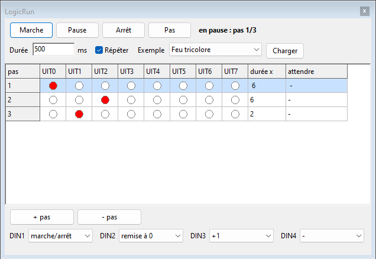
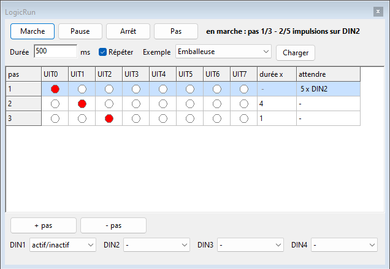
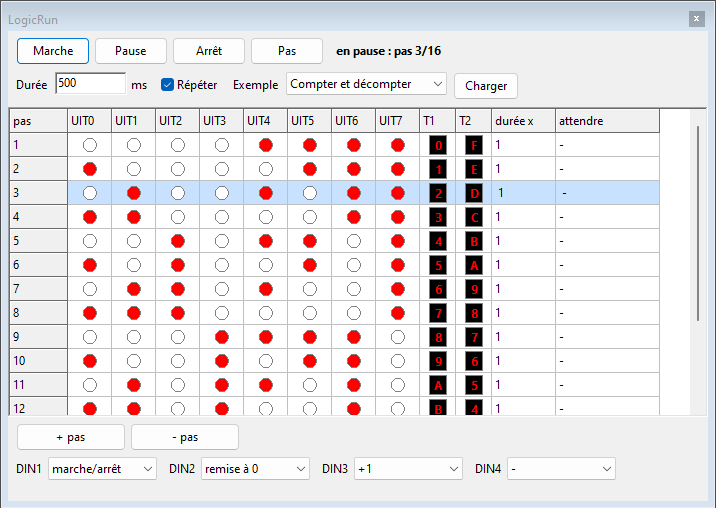

LogicRun : programmer par pasLogicRun : programmer par pas
LogicRun : programmer par pasLogicRun : programmer par pasLogicRun est un bloc que vous ne câblez pas mais que vous programmez. Vous écrivez une suite de pas ; chaque pas allume un certain nombre de sorties. Vous réalisez ainsi un feu tricolore, un chenillard ou un compteur sans utiliser une seule porte.

Vous reliez le bloc avec des fils ordinaires : les interrupteurs et les capteurs vers les entrées, les sorties vers des lampes, des relais, un buzzer ou les entrées d’autres composants.
LogicRun dans la barre de boutons.
La fenêtre LogicRun s’ouvre à côté de Logic.Il ne peut y avoir qu’un seul bloc LogicRun sur un panneau. Double-cliquez sur le bloc, ou choisissez Modifier le programme... dans le menu du clic droit, pour ouvrir la fenêtre. Le menu du clic droit permet aussi de verrouiller le bloc ou de le supprimer.

| Bouton ou champ | Que fait-il ? |
|---|---|
| Marche | Le programme s’exécute, pas après pas. |
| Pause | Le programme reste au pas actuel ; les sorties restent comme elles sont. |
| Arrêt | Le programme s’arrête et revient au début ; toutes les sorties s’éteignent. |
| Pas | Un pas plus loin, pratique pour vérifier votre programme pas à pas. |
| Durée | La durée d’une unité de temps, en millisecondes (500 ms = une demi-seconde). |
| Répéter | Coché : après le dernier pas, le programme recommence. Décoché : il s’arrête au dernier pas. |
| Exemple et Charger | Charger un programme tout fait : choisissez-le dans la liste et cliquez sur Charger. À l’ouverture de la fenêtre, la liste affiche — choisir — (voir Exemples). |
| + pas et - pas | Ajouter un pas après le pas choisi, ou supprimer le pas choisi. |
| DIN1 à DIN4 | Ce que fait chaque entrée. |
| attendre | Cliquez dans cette colonne pour faire attendre un pas une entrée ou un nombre d’impulsions (voir Attendre). |
| T1 et T2 | Le chiffre que T1 et T2 montrent sur un afficheur à ce pas. Cliquez dessus pour choisir un chiffre de 0 à F ; LogicRun règle alors lui-même les 4 sorties (voir Afficheurs). |
En haut, vous voyez si le programme tourne et à quel pas il se trouve. Le pas actuel est bleu clair dans le tableau.
Un programme compte au maximum 64 pas.
Un pas dure normalement durée x fois la durée. Dans la colonne attendre, vous pouvez à la place faire attendre un pas. Cliquez dans cette colonne et choisissez :
| Choix | Le pas dure jusqu’à ce que ... | Par exemple |
|---|---|---|
| Rien | la durée soit écoulée (comme d’habitude) | un feu tricolore |
| Jusqu’à entrée active | l’entrée choisie soit active | un fin de course : le chariot roule jusqu’au mur |
| Jusqu’à entrée inactive | l’entrée choisie soit inactive | attendre que quelqu’un relâche un bouton |
| Jusqu’à un nombre d’impulsions | ce nombre d’impulsions soit arrivé sur l’entrée | compter des boîtes : après 5 boîtes, le tapis s’arrête |

Un pas qui attend n’a pas de durée : la colonne durée x affiche alors un tiret. En haut de la fenêtre et en bas du bloc, vous voyez ce que le pas attend et combien d’impulsions ont déjà été comptées.
Sous UIT7, le bloc a deux connexions supplémentaires pour un afficheur, comme la sortie d’un compteur. Elles lisent les sorties comme un nombre binaire :
| Connexion | Lit | Affiche |
|---|---|---|
| T1 | UIT0 à UIT3 (UIT0 = 1, UIT1 = 2, UIT2 = 4, UIT3 = 8) | 0 à 9 et A à F |
| T2 | UIT4 à UIT7 (UIT4 = 1, UIT5 = 2, UIT6 = 4, UIT7 = 8) | 0 à 9 et A à F |

Dans la fenêtre, les colonnes T1 et T2 montrent le chiffre de chaque pas. Cliquez sur un chiffre et choisissez-en un autre : LogicRun active ou désactive alors lui-même les 4 sorties. À côté de chaque chiffre du menu, vous voyez les 4 bits, p. ex. 5 = 0101. Les sorties normales continuent de fonctionner : vous pouvez commander des voyants et un afficheur en même temps.

Placez deux afficheurs côte à côte, T2 à gauche et T1 à droite, pour obtenir un nombre de deux chiffres (de 00 à FF).
La plupart des fonctions réagissent au moment où l’entrée passe à 1 : utilisez pour elles un bouton-poussoir. Pour un interrupteur, il y a la fonction actif/inactif.
| Fonction | Que se passe-t-il quand l’entrée passe à 1 ? |
|---|---|
| marche/arrêt | Si le programme est arrêté, il démarre ; s’il tourne, il se met en pause. |
| remise à 0 | Le programme revient au premier pas. |
| +1 | Le programme avance d’un pas. |
| actif/inactif | Le programme tourne tant que l’entrée est active. Quand elle repasse à 0, le programme s’arrête et toutes les sorties s’éteignent (pratique avec un interrupteur). |
| - | Rien : l’entrée n’est pas utilisée. |
| Exemple | Sorties |
|---|---|
| Feu tricolore | UIT0 rouge, UIT1 orange, UIT2 vert. |
| Chenillard | UIT0 à UIT7 s’allument l’une après l’autre. |
| Moteur gauche/droite | UIT0 moteur à gauche, UIT1 moteur à droite, avec un court arrêt entre les deux. Reliez-les à L et R d’un moteur. |
| Compteur 4 bits | UIT0 à UIT3 comptent en binaire de 0 à 15 (UIT0 = 1, UIT1 = 2, UIT2 = 4, UIT3 = 8). |
| Chariot | UIT0 en avant jusqu’à ce que DIN3 soit active (fin de course), un court arrêt, UIT1 en arrière jusqu’à DIN4 ; DIN1 actif/inactif. Reliez UIT0 à R et UIT1 à L d’un moteur. |
| Emballeuse | UIT0 tapis roulant jusqu’à 5 impulsions sur DIN2 (boîtes), UIT1 emballage (2 s), UIT2 remet un compteur à zéro ; DIN1 actif/inactif. |
| Compter et décompter | T1 compte de 0 à F, T2 décompte en même temps de F à 0. Reliez T1 et T2 à un afficheur. |
| Personne aller-retour | UIT1 vers la droite jusqu’à ce que DIN4 soit active (S2), 2 s d’arrêt, UIT0 vers la gauche jusqu’à DIN3 (S1), 2 s d’arrêt ; DIN1 actif/inactif. Le même programme que dans la leçon 16 : reliez UIT0 à L et UIT1 à R d’une personne, S1 à DIN3 et S2 à DIN4. |
| Chariot sur un parcours | UIT0 en avant jusqu’à 3 impulsions sur DIN3 (poteau 3), 2 s d’arrêt, en avant jusqu’à DIN4 (Finish), 2 s d’arrêt, UIT1 en arrière jusqu’à DIN2 (Start) ; DIN1 actif/inactif. Le même programme que dans la leçon 17 : reliez UIT0 à V et UIT1 à A d’un chariot, Start à DIN2, Tel à DIN3 et Finish à DIN4. |
Le programme est enregistré avec le panneau dans le fichier du panneau (.lpl).
L’annulation fonctionne aussi pour les modifications du programme. Une
version plus ancienne de Logic ignore le bloc LogicRun.
Essayez vous-même dans la leçon 12 : Programmer avec LogicRun.